Use QSI Quantum Programmer
with
JMRI DecoderPro - NB: Windows Only
|
Download PDF version of
these Instructions |
|
Installing SiLabs VCP Drivers for QSI Programmer for the JMRI DecoderPro Version 2.2 using Windows |
|
The SiLabs
Virtual Com Port Drivers (VCP) can be used with the QSI
Programmer so that the JMRI DecoderPro will recognize the Com
Port the Programmer is on. To accomplish this, the best
method is to remove the SiLabs USBXpress Drivers required by
the QSI Solutions Programs and REPLACE them with the SiLabs
VCP Drivers entirely! Warning! Make sure you have the
latest versions of Q1A and Q2 Upgrade Programs and the Quantum CV Manager Programs so you can use these with the VCP Drivers. These Programs will NOW work with both the SiLabs USBXpress USB drivers and the SiLabs VCP drivers This means that you can replace the USB Drivers and now using one set of drivers for BOTH QSI Program AND JMRI Programs. Use following steps to uninstall USBXpress Drivers, Reconfigure the VCP Drivers Setup File, Install and Configure the VCP Drivers and Setup JMRI DecoderPro and the QSI Programs for use with the QSI Programmer. |
|
1.) Remove USBXpress Drivers for QSI Programmer. Using the Add / Remove Programs from Control Panel, remove any SiLabs USB drivers or USBXpress Drivers installed for the QSI Programmer. If no drivers are present in the Control Panel, but the QSI Programmer is still working, then Uninstall QSI Programmer from Device Manager. To Open the Device Manager, right click on My Computer, choose Properties. Choose the Hardware Tab. Then Click the Device Manager Button. (Also available from the Control Panel, System Icon.)With the QSI Programmer powered and connected with the USB cable, right click and choose uninstall. Then unplug the QSI Programmer USB cable. |
|
Figure 1 - Add/Remove Programs |
|
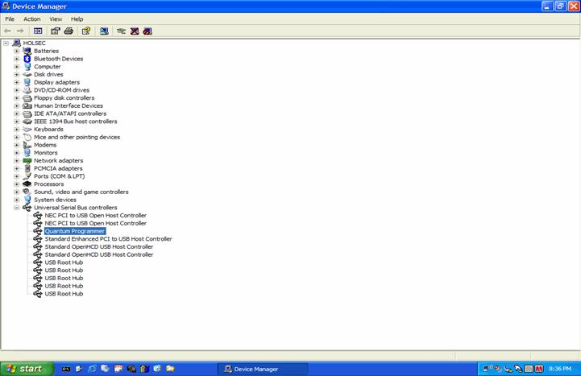 |
|
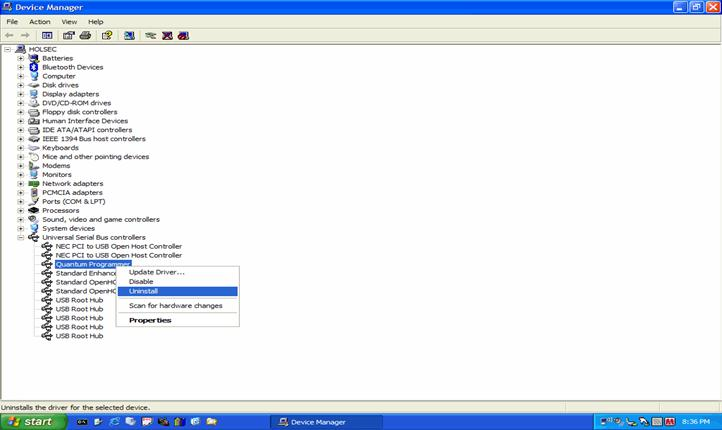 |
|
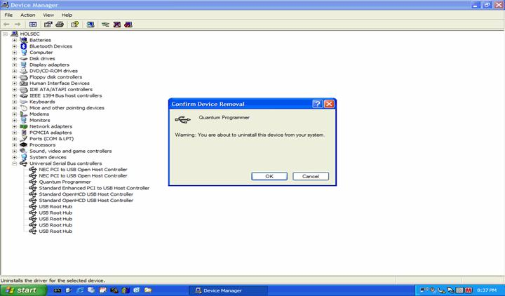 |
|
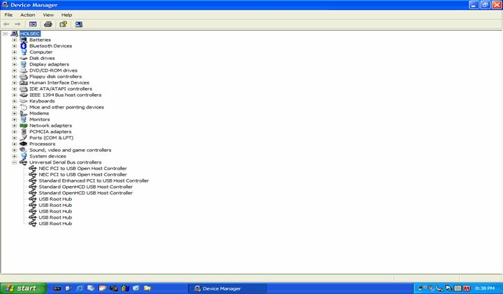 |
|
2.)
Download and Unzip CP210x_VCP_Win2K_XP_S2K3.zip from
http://www.silabs.com
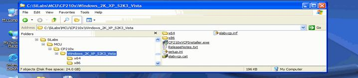 |
|
Open this
file with notepad. This can be done by right clicking on the
file and choosing Open.
Click file,
save on the open notepad. Close notepad.
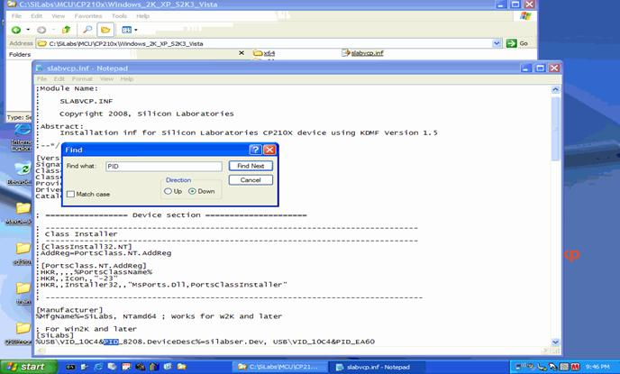 |
|
3.) Execute CP210xVCPInstaller.exe from the same
folder that slabvcp.inf is in. Use the default settings and
click install from the CP210X USB to UART Bridge Driver
install Window. Choose 'Continue Anyway' button, IF you get
the Windows Driver Warning "...has not passed the Hardware
Compatibility Logo Testing".
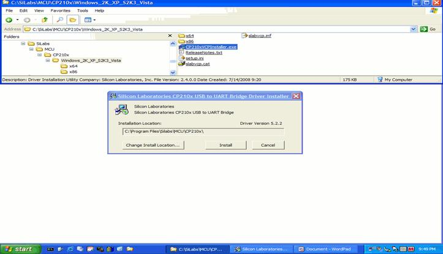 |
|
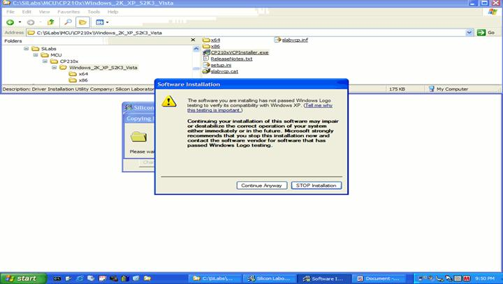 |
|
4.)
The Virtual
Com Port will NOT show up in the device manager until you plug
in the QSI Programmer and configure it to use the SiLabs VCP
Drivers.
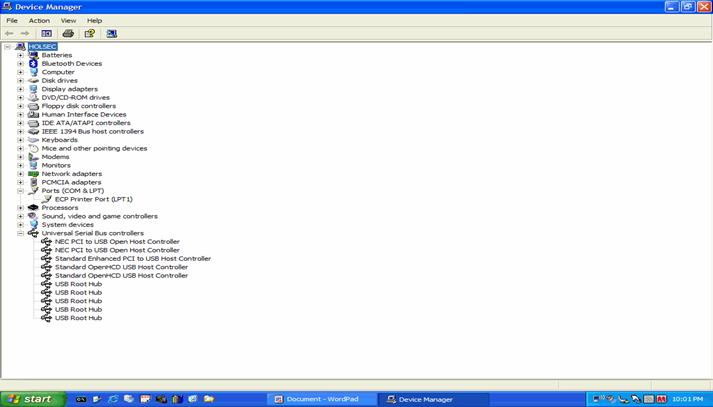 |
|
With the Power Cable connected and powering the QSI Programmer, plug it in to the USB port of your computer. The "Found New Hardware Window" should open, if you have successfully removed all of the USBXpress Drivers. Choose "NO" to search Update Site for Drivers. Then Click Next. |
|
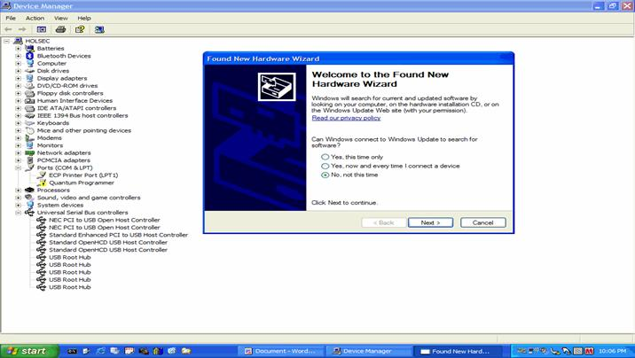 |
|
Choose the
default "Install Software Automatically" (recommended) setting
and click Next. Choose Continue Anyway Button if you get the
Windows Driver Warning "...has not passed the Hardware
Compatibility Logo Testing". Drivers will finish installing.
Choose Finish when drivers are installed. You might get an
information "balloon" from the notification area, by the clock
that the Hardware is installed and ready to use.
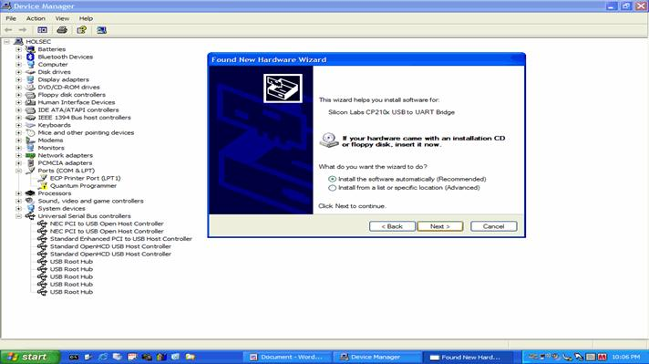 |
| 5.)
Open Device Manager and confirm that the SiLabs Virtual Com
Port is installed in the ports section. The driver will assume
the first available Com Port. (Normally 2 or 3) (On this test
machine it found Port 8 as the first Available.) What Ever
port is found should show up in the Preferences Window of the
JMRI DecoderPro.
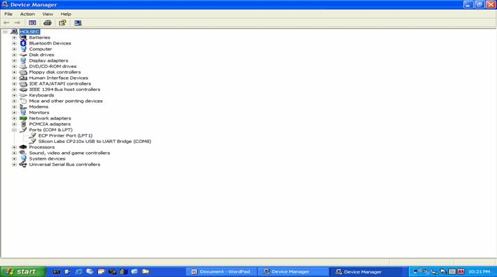
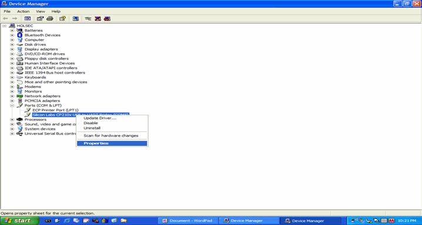
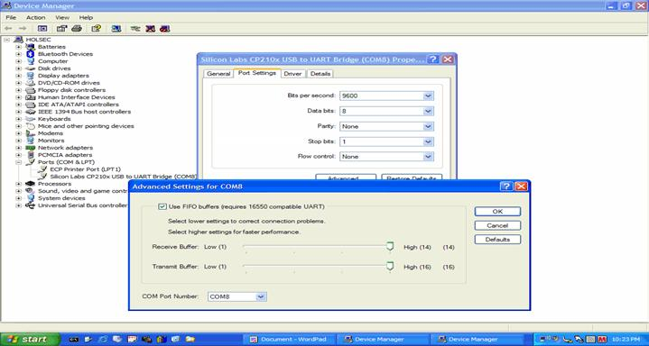
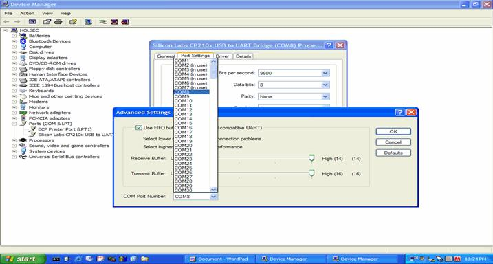 |
|
6.) Using the preferences option of JMRI DecoderPro, choose QSI Programmer and the Com Port that the VCP is using.
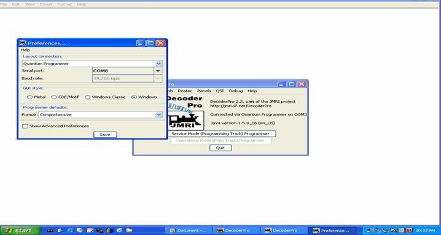 |
|
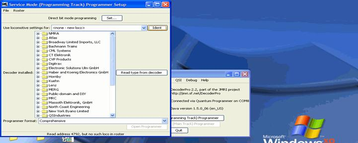 |
|
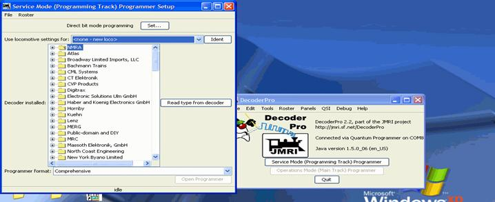 |
|
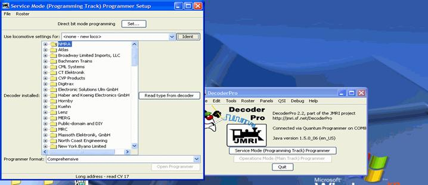 |
|
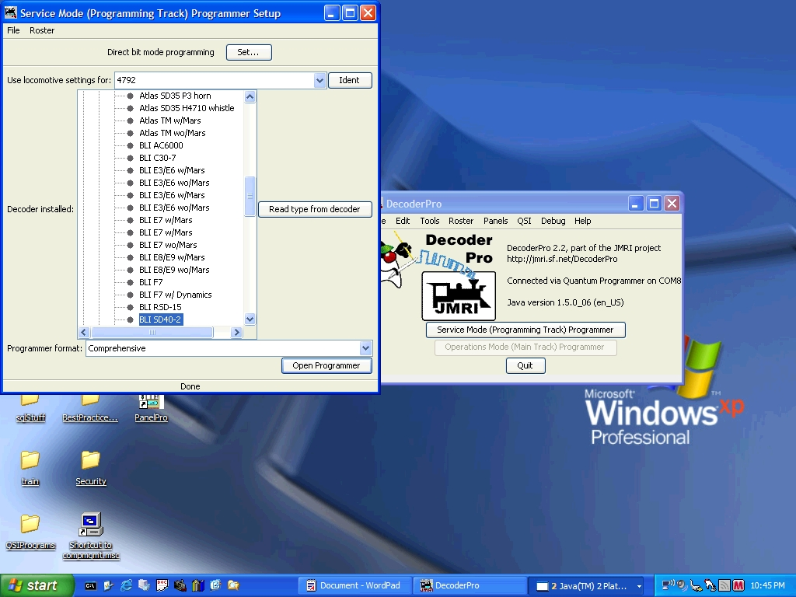 |
|
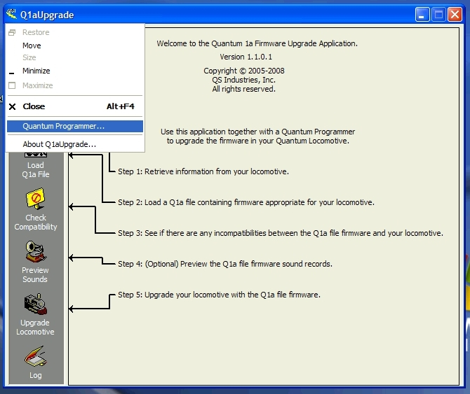 |
|
Figure 24 - Choose Menu from Icon at top left corner |
|
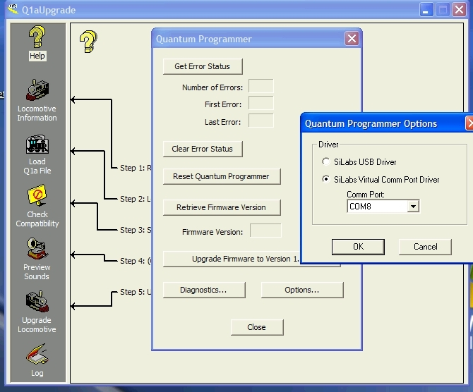 |
|
Figure 25
- After
clicking Quantum Programmer, choose option button |
|
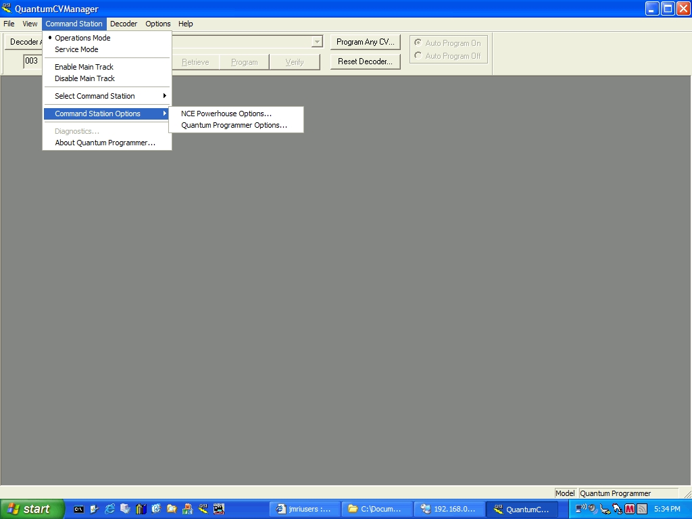 |
|
Figure 26
- Choose
Command Station, Command Station Options then |
|
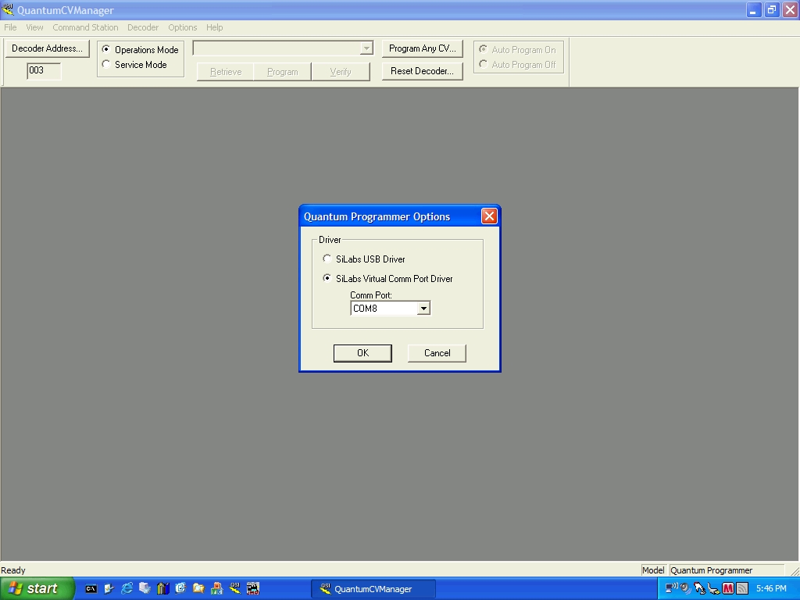 |
|
Figure 27 - Configure Choice of Virtual Driver and Port Number |
|
By using these Instructions and steps, YOU are accepting
ALL responsibility for any damages and issues; use this
project at your own risk as these instructions come with no
warranty, express or implied. These instructions are limited
to adapting SiLabs VCP Drivers for use with the QSI Programmer. Suitability for use
with JMRI DecoderPro is neither Implied or guaranteed.
Nothing in this article is meant to imply that DecoderPro
will work properly with this SiLabs VCP Adaptation. Contact
JMRI for issues and questions regarding DecoderPro. Contact Email: maxrob@mindspring.com http://maxrob.home.comcast.net |
|
(updated July 23, 2008)
|